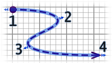
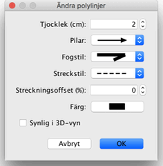

|
|
Redigera polylinjer och kurvor | ||
|
Du kan �ndra en polylinjes plats med musen, efter att du markerat dem i
planl�sningen. N�r en polylinje �r vald i planl�sningen s� kan du flytta dess punkter, med indikatorerna vid varje punkt i den valda polylinjen. 
N�r muspekaren �r �ver en av dessa indikatorer �ndras den f�r att indikera att du kan
dra och sl�ppa punkten f�r att flytta den.  I polylinjer-dialogrutan kan du �ndra dess tjocklek, om pilar ska ritas i �ndorna, stilen f�r fogade linjer, streckad-stilen och f�rg. Det sista alternativet i Fogstil-rutan g�r att det ritas en kurva ist�llet f�r linjer. |
|